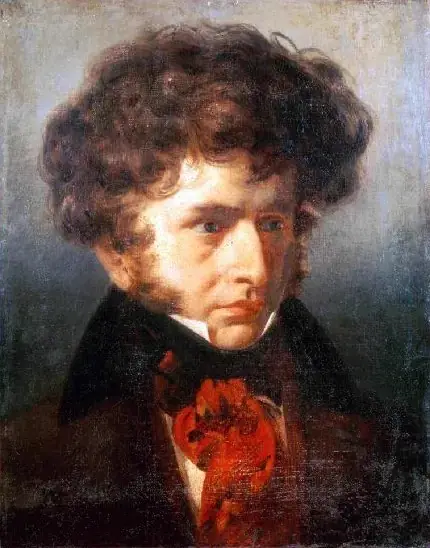

The atlas
Composers
80 composers in seven chapters, ordered by year of birth. Every work in the Concert Hall is listed separately.
The Baroque
1600–1750
Barbara Strozzi
Venetian singer and composer of cantatas, arias and madrigals, whose numbered books of vocal music appeared in Venice between 1644 and 1664.
Élisabeth Jacquet de La Guerre
Parisian harpsichordist and composer who played for Louis XIV as a child and published harpsichord suites, violin sonatas, cantatas and the opera Céphale et Procris.
François Couperin
Musician who played for Louis XIV on Sundays, known at the harpsichord for held notes, trills and well-placed silences.
Antonio Vivaldi
Venetian composer of concertos for the women of the Pietà and operas for the city’s theatres, who wrote a barking dog for the viola.
Jean-Philippe Rameau
Composer and theorist who explained the roots of chords in a treatise and wrote his first opera at the age of fifty.
Johann Sebastian Bach
Composer who supplied music for Leipzig’s churches for twenty-seven years and wrote a large body of keyboard music.
George Frideric Handel
Composer who filled London theatres with Italian opera and later put an English-speaking chorus at the centre of the drama.
Domenico Scarlatti
Composer and royal teacher, known for his keyboard sonatas.Classical
1750–1827
Carl Philipp Emanuel Bach
Accompanist to Frederick the Great and composer of keyboard music known for abrupt interruptions and trembling single notes.
Joseph Haydn
Composer known for an orchestral work in which the players leave one at a time, and for a quartet that continues after listeners think it has ended.
Wolfgang Amadeus Mozart
Composer of operas in which a servant outwits a count, and of piano concertos in which the soloist sometimes enters before the orchestra has finished its opening.
Ludwig van Beethoven
Composer known for a symphony built from a four-note motif and for the string quartets of his last years.Romanticism
1815–1890
Gioachino Rossini
Composer known for ensembles of quarrelling characters sung with clockwork precision, and for the orchestral depiction of mountains and storms in William Tell.
Franz Schubert
Composer who at seventeen wrote a song for Gretchen with a spinning-wheel accompaniment and at thirty-one wrote music for two cellos.
Hector Berlioz
Composer who used the full orchestra at full volume and also a single cor anglais playing alone against silence.
Fanny Hensel
Berlin composer who ran the city’s Sunday concerts, wrote more than 450 works and published collections under her own name only in the last year of her life.
Felix Mendelssohn
Composer who wrote a work for eight string players at the age of sixteen.
Frédéric Chopin
Composer for the piano, known for music that drew on operatic singing and on the irregular accents of the mazurka.
Robert Schumann
Composer and music critic, a bookseller’s son, whose piano music depicts lovers, masks and arguments.
Franz Liszt
Pianist whose playing drew orchestral sound from the keyboard, and who at the end of his life turned to sparse music at the piano.
Giuseppe Verdi
Composer whose catchy tenor tunes could carry a fatal meaning when the wrong man heard them.
Richard Wagner
Composer who placed the orchestra beneath the stage at Bayreuth, hidden from the audience.
Clara Schumann
Performer on the concert platform for forty years, who wrote of making music, “It is the air I breathe.”
Anton Bruckner
Composer who studied his craft for half his life before writing symphonies in which a horn call can expand into full brass.
Bedřich Smetana
Czech composer and conductor from Litomyšl, whose operas for Prague’s Provisional Theatre include The Bartered Bride; deaf from 1874, he then wrote Má vlast and the quartet From My Life.
Alexander Borodin
Russian chemist, professor at the Medical-Surgical Academy in Saint Petersburg, who composed two symphonies, two string quartets and the opera Prince Igor.
Johannes Brahms
Composer who completed his First Symphony at the age of forty-three and began his Second beside an Austrian lake the following summer.
Georges Bizet
Composer of an opera in which a factory worker sings that love obeys no law, while four bass notes beneath her voice keep the dance going.
Modest Mussorgsky
Composer who could make a singer sound like a frightened child, a drunken monk or a tsar who could no longer bear his own thoughts.
Pyotr Ilyich Tchaikovsky
Composer who could write a brilliant ballroom scene and, within it, a single melody showing that someone present was unhappy.
Antonín Dvořák
Composer of the Slavonic Dances, who played viola in an opera orchestra for nine years before his music became widely known.
Edvard Grieg
Composer, the son of a Bergen merchant, who used Norwegian fiddle tunes, a troll king and a wedding party in concert-hall music.
Nikolai Rimsky-Korsakov
Russian composer known for fairy-tale operas and his detailed knowledge of the orchestra; he became a professor before he had learned counterpoint.Fin de siècle
1880–1918
Leoš Janáček
Composer who wrote down the voices of strangers in Brno and wrote operas known for their recognisable characters.
Edward Elgar
Composer of the Enigma Variations, a set of variations drawn from his friendships, who also recorded his own music for the gramophone.
Giacomo Puccini
Composer who held a theatre audience through a scene of a woman at a window, then brought back a tune it had heard before.
Gustav Mahler
Conductor who composed during the summers and intended each symphony to contain a whole world, combining the sublime with the music of the street band.
Richard Strauss
Composer, the son of a horn player, who wrote long farewell songs for soprano.
Carl Nielsen
Danish composer, violinist and conductor, born on Funen and based in Copenhagen, who wrote six symphonies, the opera Maskarade, a wind quintet and a large body of songs and hymn tunes.
Jean Sibelius
Composer who took the horn theme of his Fifth Symphony from sixteen swans he watched circling over Ainola, and who worked on the symphony for four years.
Amy Beach
American composer and former prodigy from New Hampshire who taught herself orchestration by attending Boston Symphony concerts; known for a symphony built on Irish tunes, first given in Boston.
Alexander Scriabin
Composer who wrote a part for coloured light that had to be omitted at the work’s first performance.
Sergei Rachmaninoff
Russian composer and pianist who earned his living at the piano in exile and whose music uses the sound of the bells of his childhood.The French Line
1870–1937
Camille Saint-Saëns
Pianist from the age of ten and organist for twenty years, known for the Organ Symphony, a dance of skeletons featuring xylophone, and a zoo suite he forbade anyone to publish.
Gabriel Fauré
Organist and teacher who wrote songs and chamber music in an unusual harmonic language.
Claude Debussy
Composer who trusted his ear over the rules (“pleasure is the law”) and wrote new sounds for the piano, the flute and the orchestra.
Erik Satie
Composer of the Gymnopédies, who asked pianists to prepare for 840 repetitions with “serious immobilities”.
Maurice Ravel
Composer of a ballet built from two tunes and a snare drum, and of a suite of dances dedicated to his war dead.
Manuel de Falla
Composer from Cádiz who studied in Paris with Dukas and Debussy and is known for bringing Andalusian song and the guitar into orchestral music.
Lili Boulanger
Composer who won the Prix de Rome at nineteen and, before her death at twenty-four, wrote songs of lost love and settings of psalms.
Francis Poulenc
Pianist and composer of sacred works, love songs and an opera in which the choir is silenced by the guillotine.Modernism
1908–1945
Ralph Vaughan Williams
Collector of an Essex folk song in 1903, editor of the English Hymnal, and the man who brought a Tudor psalm tune into the concert hall.
Charles Ives
Composer and New York life-insurance salesman whose music sets a hymn heard across a river against a marching band.
Arnold Schoenberg
Composer who abandoned tonality, continued to study Bach and Brahms, and wrote a minuet using all twelve notes.
Béla Bartók
Composer who saw a future for concert music in village songs and used a phonograph to record how they were sung.
Igor Stravinsky
Composer of dance music in which a single displaced accent could unsettle the dancers, and of a psalm setting that scarcely moves.
Anton Webern
Composer known for passing melodies from horn to clarinet to cello, with each instrument holding only a few notes of a phrase.
Alban Berg
Composer of Wozzeck, an opera about an exploited soldier, and of a twelve-note concerto that quotes a Bach chorale and is dedicated to the memory of Manon Gropius.
Florence Price
American composer whose symphonic music used the juba dance and the brass hymn as central elements.
Heitor Villa-Lobos
Brazilian composer and conductor, born in Rio de Janeiro, who wrote the Chôros, the Bachianas Brasileiras and a body of music for guitar.
Sergei Prokofiev
Twentieth-century composer known for Romeo and Juliet, with its writing for strings, and for his piano music.
George Gershwin
Composer who brought Broadway rhythms into the concerto, known for a clarinet slide.
Aaron Copland
Modernist composer from Brooklyn, known for his open fifths, his cowboy dances and a slow fanfare for brass.
Dmitri Shostakovich
Composer of fifteen symphonies written under Soviet rule, who signed some of his most personal music with the four-note motif D–E♭–C–B♮.After 1945
1945–present
Olivier Messiaen
Organist at La Trinité for sixty years, whose music drew on birdsong and was played by the pianist Yvonne Loriod.
John Cage
Composer who put bolts between piano strings, composed with chance operations, and wrote a piece of four minutes and thirty-three seconds made up of the sounds around a concert.
Benjamin Britten
Composer who wrote Grimes and Aschenbach for Peter Pears, a work with an ark full of animals for Suffolk children, and a requiem in which dead soldiers speak.
Leonard Bernstein
American conductor, pianist and composer, music director of the New York Philharmonic from 1958 to 1969 and composer of West Side Story and the Chichester Psalms.
Iannis Xenakis
Greek composer, born in Romania and naturalised French in 1965, who trained as an engineer, worked for Le Corbusier in Paris and composed with probability theory, set theory and computers.
György Ligeti
Composer of orchestral works in which dozens of moving parts are contained within one sustained sound, and of piano études in which the two hands play at different speeds.
Pierre Boulez
Composer of music built on explosive attacks and long echoes, who also founded the ensembles, concert series and laboratories needed to perform it.
Morton Feldman
Composer of quiet, softly struck piano writing and of a string quartet that can last six hours.
György Kurtág
Composer known for Játékok, which began as children’s piano games and grew to include pieces for friends, birthdays and farewells.
Sofia Gubaidulina
Composer whose Offertorium, for Gidon Kremer’s violin, takes apart and rebuilds Bach’s royal theme.
Arvo Pärt
Composer who rebuilt his music on a melody and three notes, and who wrote a lament for Britten based on a descending scale.
Steve Reich
Composer who built music from two tape machines drifting out of time with each other, and later applied the same phasing process to pianists, drummers and singers.
Philip Glass
American composer and keyboard player, born in Baltimore, who wrote operas, symphonies, string quartets and film scores and led his own ensemble in New York.
John Adams
A New England clarinettist and composer, known for bringing Nixon to the stage and for a fast orchestral piece driven by a woodblock beat.
Kaija Saariaho
Composer who built music from the timbre of a single cello note and wrote an opera about two people who had never met.